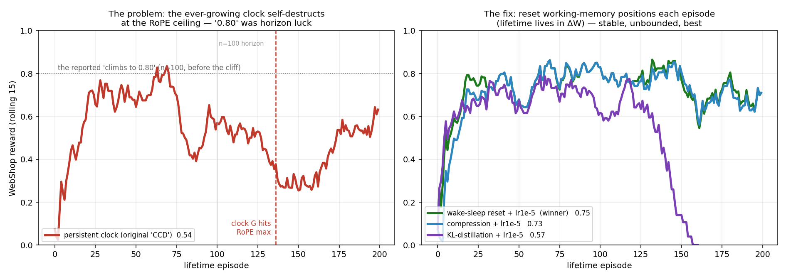
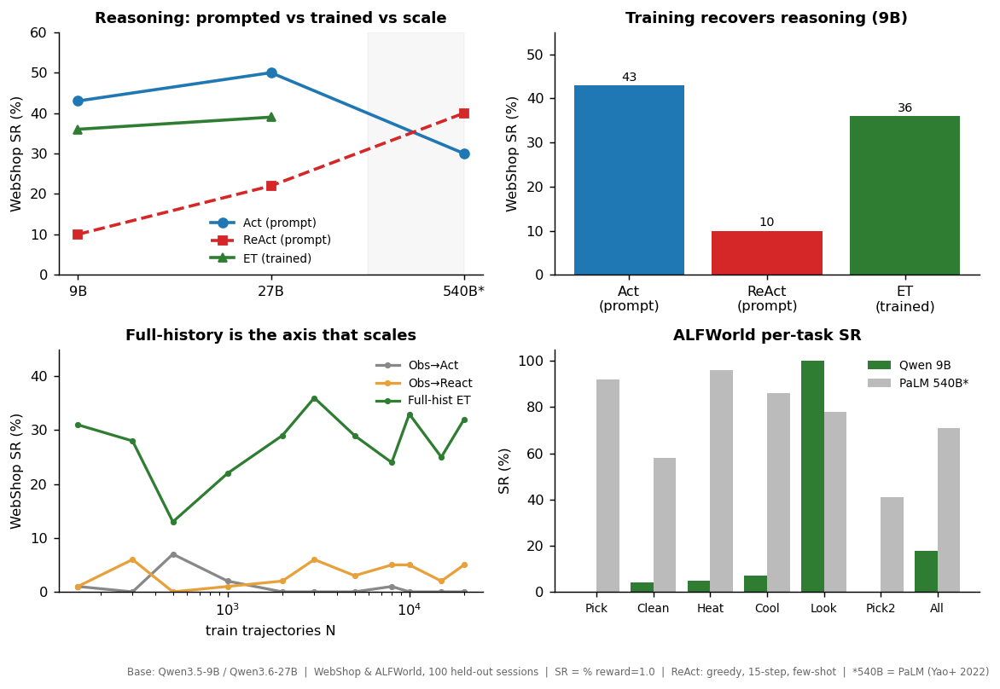
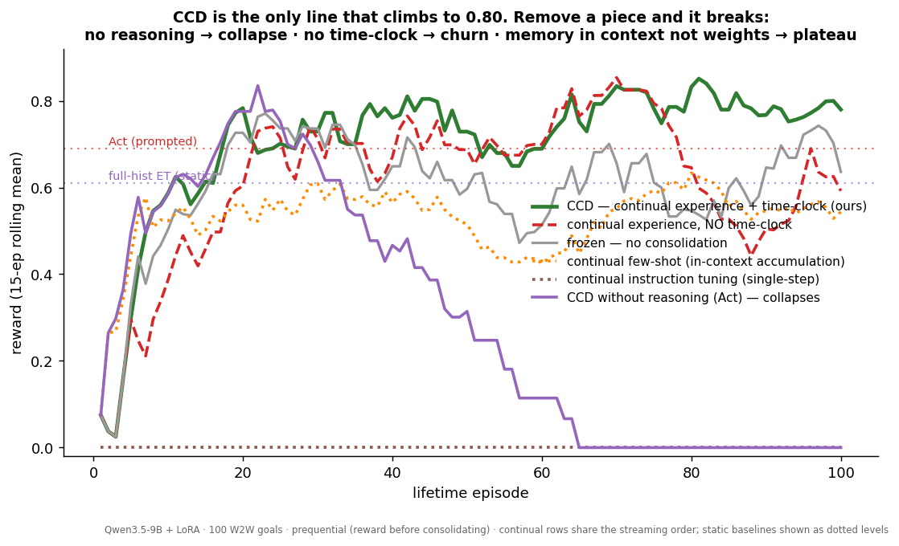

How our method differs from the baselines — at a glance. (Qwen3.5-9B, WebShop, 100 shared held-out goals.)
memory (4) × reasoning (2) × column (3) = 24. Prompted is one column: with frozen weights there is no static-vs-continual distinction — the memory type already says whether context accumulates (zero-shot/few-shot = fixed; windowed/persistent = accumulating across episodes). Static-vs-continual only applies to finetuned ΔW (train once & freeze vs keep updating online). (Counting the full 4×2×2×2 = 32 factorial: the 8 prompted-continual cells are degenerate ≡ prompted-static — with frozen weights there is no static/continual difference — so all 32 are accounted for as 24 measured + 8 ≡, shown here as 24 distinct cells.) Numbers = WebShop reward (0–1, 100 goals); ↑ climbs / ⤵ collapses; grey ≈ degenerate. All 24 measured.
| in-context memory | PROMPTED ❄️ frozen | FINETUNED · 🔥 ΔW | ||
|---|---|---|---|---|
| type | think | static | continual | |
| zero-shot obs only | Act | 0.10 | 0.00 | 0.00 |
| ReAct | 0.11 | 0.15 | 0.00 | |
| static few-shot k fixed exemplars | Act | 0.69 | 0.75 | 0.53 ⤵ |
| ReAct | 0.12 | 0.62 | 0.33 ⤵ | |
| windowed sliding window | Act | 0.22 | ≈ exper | 0.42 ⤵ |
| ReAct | 0.54 | ≈ exper | 0.45 | |
| persistent full history | Act | 0.38 | 0.75 | 0.27 ⤵ |
| ReAct | 0.53 | 0.63 | 0.74⚠ | |
Left — the original persistent-clock design self-destructs. The "climb to 0.80" exists only below the n=100 horizon; extend the lifetime and the clock crosses the RoPE ceiling (ep ~136) and the agent cliffs to 0.28 (overall 0.54, declining). Right — the fix. Resetting working-memory positions each episode (wake/sleep; the lifetime lives in ΔW) is stable and best — 0.747, flat across all 200 episodes; position-compression (cap the clock) is a close runner-up (0.733); KL-distillation collapses to 0.

What the 32 collapse to. Frozen prompting can't update memory it doesn't keep, so zero-shot and static few-shot have no real "continual" column (grey ≡). The diagonal of measured cells is the story: memoryless finetune (zero-shot·FT) = 0.00; static few-shot prompt = 0.69/0.12; windowed continual prompt = 0.22/0.54; persistent finetune (Experience) = 0.75/0.63; persistent finetune continual (CCD) = 0.80 ⚠ n=100 pre-cliff snapshot — declines to 0.54 at n=200; see correction above. The biggest open region is FINETUNED × {few-shot, windowed} memory — i.e. giving a ΔW-trained model in-context exemplars or a sliding window at test, static and continual. Those cells have since been run (see §1) — the finetuned×memory block adds nothing over CCD; extra in-context memory on top of ΔW does not help and often hurts.
Traced against the real code (lifetime_agent.py, train_react_wm.py, rollout_webshop.py, react_baseline_webshop.py — all md5-matched to the cluster versions that produced the numbers). The 12 measured cells are verified; the open cells are split into "runnable now" vs "needs code".
| cell | script · flags | test-time context (in-context memory) | train loss (roles) | positions | status |
|---|---|---|---|---|---|
| Prompted few-shot Act / ReAct · 0.69/0.12 | react_baseline_webshop.py --mode act|react | constant ReAct-paper exemplar (PROMPT_ACT/REACT) + full episode transcript, 6400-char cap | — (frozen base) | default | ✓ verified |
| Instruction tuning Act / ReAct · 0.00/0.15 | train_react_wm.py --n-wm 2 (Act) / 3 (ReAct) = one obs(+think)+act step → eval rollout_webshop.py --no-history | memoryless: current obs only (history filtered to last obs) | {think, act} · obs masked | default | ✓ verified |
| Experience tuning Act / ReAct · 0.75/0.63 | train_react_wm.py --n-wm 0 (whole traj, iid) → eval rollout_webshop.py | full episode history (all [obs/think/act] so far) | {think, act} · obs masked | default | ✓ verified |
| Windowed prompted continual in-ctx accum · 0.22/0.54 | lifetime_agent.py --integration context_accum --ctx-budget 16384 | sliding window: last 16384 tokens of past episodes prepended; weights frozen | — (optim=None) | default | ✓ verified |
| Continual instruction tuning Act / ReAct · 0.00/0.00 | lifetime_agent.py --integration everything --single-step --no-history | memoryless per step | {act} only, per (obs→act) pair | persistent G | ✓ verified |
| CCD Act / ReAct · 0.27/0.80 | lifetime_agent.py --integration everything (+--act-mode for Act) | full episode history | {obs, think, act} — trains on obs too | persistent G | ✓ verified |
| zero-shot prompted open cell | react_baseline_webshop.py w/ empty exemplar, or rollout_webshop.py base + --no-history | current obs only, no exemplars | — (frozen) | default | ⚠ runnable — needs a no-exemplar prompt variant |
| persistent prompted continual open cell | lifetime_agent.py --integration context_accum --ctx-budget 200000 | unbounded: all past episodes in prompt (no eviction) | — (frozen) | default | ⚠ runnable now (context-budget heavy) |
| finetuned × static few-shot @ test open cell, 4× | rollout_webshop.py on a trained adapter + few-shot exemplars | exemplars + episode history | (adapter pre-trained) | default | ✗ needs code — rollout has NO exemplar-prefix flag (~10 lines) |
| finetuned × windowed continual open cell, 2× | lifetime_agent.py consolidate ΔW and carry windowed prompt | sliding window + ΔW update | {obs,think,act}, persistent G | default | ✗ needs code — context_accum & integration are mutually exclusive (~20 lines) |
LOSS_ROLES={think,act}, train_react_wm.py:33). But CCD everything consolidation trains on obs too (lr_roles={obs,think,act}, lifetime_agent.py:204). So CCD is not the exact continual analog of the static ET cell — it adds a world-model (obs) objective. This is a plausible driver of the CCD-Act collapse: act-only + obs-heavy loss, with no think tokens to anchor the policy → drift to observation-spewing.Action:/Observation: framing; trained cells use [obs_k]/[act_k] brackets. Cross-format comparison caveat (already noted for native-chat).{act} only (lifetime_agent.py:199), not obs — unlike CCD. Consistent with "memoryless single-step", but a different mask than the row above it.rollout_webshop.py; (2) lifetime_agent currently makes context_accum (windowed prompt) and gradient integration mutually exclusive (optim=None if integration in (frozen, context_accum), line 165) — combining "memory in context" + "memory in weights" needs that gate relaxed.Each cell is the experimental setup as a pipeline: the in-context memory shown with real o/r/a tokens (zero-shot = just the current o; few-shot = a fixed faint exemplar chain + current o; windowed = a ↺ sliding recent chain; persistent = the full o→a→o→a… history) → LM (🔒 frozen, ΔW, or ΔW🕒 continual) → prediction (a for Act, r→a for ReAct). No numbers here — the measured rewards are the §1 table above.
Measured prequentially (reward recorded before each episode is consolidated), so the rising curve directly shows that accumulating experience makes the agent better.
Nine building blocks. Each method turns some on. Reading down a column shows what one component is worth; reading across a row defines the method. Result metric noted per group.
| method | 1·Hist | 2·Reason | 3·Train ΔW | 4·FullSFT | 5·SelfThink | 6·Slide | 7·Time | 8·Recall | 9·Contl | result |
|---|---|---|---|---|---|---|---|---|---|---|
| Frozen · prompted (no training) — metric: SR% | ||||||||||
| Act | ✓ | · | · | · | · | · | · | · | · | 43 |
| ReAct | ✓ | ✓ | · | · | · | · | · | · | · | 10 |
| Trained · frozen at eval · iid order (units shuffled, no temporal structure) — metric: SR% | ||||||||||
| Obs→Act (memoryless) | · | · | ✓ | · | · | · | · | · | · | ~5 |
| Obs→React (memoryless) | · | ✓ | ✓ | · | ✓ | · | · | · | · | ~5 |
| Full-history Act (no think) | ✓ | · | ✓ | ✓ | · | · | · | · | · | training… |
| Full-history ET (+ think) | ✓ | ✓ | ✓ | ✓ | ✓ | · | · | · | · | 36 |
| ET + sliding (design-A) | ✓ | ✓ | ✓ | ✓ | ✓ | ✓ | · | · | · | 29 |
| ET + traj-RoPE (design-A) | ✓ | ✓ | ✓ | ✓ | ✓ | ✓ | ✓ | · | · | 28 |
| ET + recall (design-A) | ✓ | ✓ | ✓ | ✓ | ✓ | ✓ | ✓ | ✓ | · | 16 |
| Continual lifetime · streaming order (episodes arrive in time; memory updated online — in context or in weights) — metric: reward (overall / last⅓) | ||||||||||
| Continual few-shot (in-context accum) | ✓ | ✓ | · | · | ✓ | ✓ | · | · | ctx | .54 / .57 |
| Continual instruction tuning (single-step) | · | · | ✓ | · | · | · | ✓ | · | ✓ | .00 / .00 |
| CCD frozen (control) | ✓ | ✓ | ✓ | ✓ | ✓ | · | · | · | · | .62 / .59 |
| CCD continual, no-time (9 only) | ✓ | ✓ | ✓ | ✓ | ✓ | · | · | · | ✓ | .64 / .60 |
| CCD everything (9 + 7) | ✓ | ✓ | ✓ | ✓ | ✓ | · | ✓ | · | ✓ | .74 / .80⚠ n=200: 0.54 ↘ (clock cliffs) |
| wake/sleep reset + lr1e-5 | ✓ | ✓ | ✓ | ✓ | ✓ | · | reset | · | ✓ | 0.747 flat over 200, unbounded |
| CCD-Act (no reason — drop col 2) | ✓ | · | ✓ | ✓ | · | · | ✓ | · | ✓ | .27 / .00 ⤵ |
| CCD hybrid (full) | ✓ | ✓ | ✓ | ✓ | ✓ | · | ✓ | ✓ | ✓ | .74 / .75 |
1 Hist act on the full episode so far · 2 Reason a think step before acting · 3 Train ΔW LoRA weights learn (vs frozen prompt) · 4 FullSFT supervised on the whole trajectory, observations masked from the loss · 5 SelfThink the think is the model's own forward-dynamics rationale (no teacher) · 6 Slide sliding window covers full >4K-token trajectories · 7 Time a growing/anchored RoPE clock · 8 Recall reproduce past windows from a cue · 9 Contl ΔW keeps updating online over the lifetime.
Each row is a pair of methods differing in exactly one column, so the Δ is that component's marginal effect — held everything else fixed. The extra continual runs (no-time, frozen) let us separate 7&9.
| component isolated | controlled pair (A → B, one column changes) | metric | Δ | verdict |
|---|---|---|---|---|
| 1 · History | Obs→Act → Full-history ET | SR | +31 | decisive — memory is what scales |
| 2 · Reason — when frozen | Act → ReAct | SR | −33 | the think-trap (small frozen model) |
| 2 · Reason — when continual | CCD-Act → CCD (add reason) | reward | +0.53 | flips — reasoning stabilises lifelong consolidation (collapse → climb) |
| 6 · Sliding window | ET → ET+sliding | SR | −7 | hurts (local-context mismatch) |
| 7 · Time — when frozen | ET+sliding → ET+traj-RoPE | SR | −1 | null (nothing to anchor) |
| 7 · Time — when continual | continual no-time → continual + time | reward | +0.16⚠ | n=100 only — reverses at n=200 (growing clock cliffs at the RoPE ceiling; reset-time wins) |
| 8 · Recall — frozen | ET+traj-RoPE → ET+recall | SR | −12 | hurts |
| 8 · Recall — continual | CCD everything → CCD hybrid | reward (climb) | −0.09 | dampens the climb |
| 9 · Continual (alone) | frozen → continual, no-time | reward | +0.02 | marginal by itself; no climb |
History is the only axis that scales — full-history ET (green) vs memoryless ablations (≈0).

Reasoning vs acting vs scale — prompted ReAct climbs with scale but trails Act through 27B; trained ET sits between.

⚠ n=100 only. CCD appears to hill-climb past every baseline at the 100-episode horizon — but this is the pre-cliff window; see §1's n=200 figure (wakesleep_n200.png) for the full lifetime, where the persistent clock cliffs and the stable winner is the wake/sleep reset design.

[soft-prompt ⊕ O/A trajectory], every token is predicted from a constant-width-W context: a blue top triangle of trainable prompts (the ever-present prior context — memory / world-model, baked into the weights) plus the green bottom triangle of the real O/A trajectory. Width W = the trajectory length, so the green covers the whole real triangle (every token reaches the start) and the prompts fill the complementary top — even the first token gets a full window, so no token cold-starts. Train: distill the whole trajectory with this soft-prompt + LoRA, loss on the unmasked r/a (think/act) tokens only (obs masked); then move to the next episode (continual). Trained and deployed windowed.Left — what pretraining does: a causal triangle where the first tokens are generated from almost nothing (t₁ from ~zero context), and t₁ becomes an attention sink. Right — our fix: a fixed-width diagonal window, with the trainable prompts (blue) covering the top triangle so t₁'s window = [prompts ⊕ t₁] — a full W — and every token sees exactly W. On Qwen3.5-9B the mask applies to the 8 softmax layers; the 24 linear-attention layers are already bounded/decaying.

⚠ Result (n=200): 0.343 — does NOT work. The parallelogram (W=2048, P=2047 trainable prompts) rises to ~0.61 then craters to ~0.10 (ep 80–120) and only partially recovers (last-third 0.33) — far below the wake/sleep full-context CE winner (0.747). Note W≥trajectory means this is not context-limited (the green covers the whole real triangle); so the failure isn't missing context — the prime suspect is the 2047 random-initialized soft-prompts destabilizing the online policy (and they make deploy ~2× slower). Takeaway for the whole thread: every attempt to restructure/bound the context — hard truncation, KL-distillation, windowed, parallelogram — underperforms or collapses; plain full-context experience-tuning with reset positions + low LR remains the robust method. Open follow-up: a small, embedding-initialized prompt block rather than 2047 random vectors.
→ full methods brief (detailed text) · replication tables · per-cell numbers